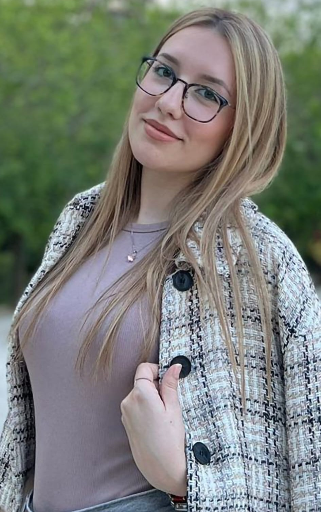

Studentkinja biomedicinskog inženjerstva sa praktičnim iskustvom u hardverskoj elektronici i embedded programiranju, stečenim kroz višegodišnji rad na Eurobot takmičenju.

Studentkinja sa izraženim interesovanjem i praktičnim iskustvom u oblasti hardverske elektronike i embedded programiranja, stečenim kroz višegodišnji rad na Eurobot takmičenju. Tokom rada na realnim robotskim sistemima razvila sam veštine u lemljenju SMD i THT komponenti, izradi i krimpovanju kablova, ožičavanju, testiranju i dijagnostici elektronskih sklopova, kao i pisanju C koda za upravljanje mikrokontrolerima i integraciju kompleksnih sistema.
Odlikuju me preciznost, odgovornost i sistematičan pristup rešavanju tehničkih problema, kao i sposobnost rada pod pritiskom u timskom okruženju. Posebno sam motivisana za dalje usavršavanje u oblasti elektronike, embedded sistema i programiranja kroz praktične projekte i industrijsku primenu znanja.